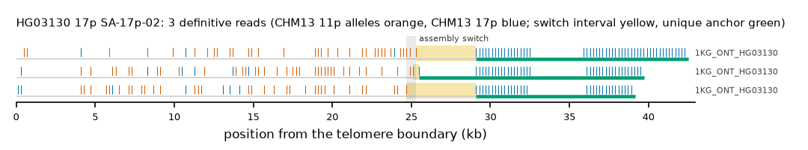

HG03130 17p: SA-17p-02
Claim HG03130|17p|SA-17p-02. All claims
- cohort
- 1000 Genomes ONT
- individual
- HG03130
- haplotype
- hap2
- arm
- 17p
- allele
- SA-17p-02 (foreign)
- model
- donor CHM13 11p, proximal CHM13 17p, recipient CHM13 17p, pattern DP
- claimed end(s)
HG03130#2#JBHDWJ010000059.1#L- assembly switch
- 20,681 bp from the telomere boundary; on CHM13 chr17:8487; own-window projection 24700-25300 bp
- v1 verdict
- confirmed (confirmed)
- definitive tier
- definitive
- reads
- 3 conclusive switch-concordant, 0 discordant, 1 contradicting, 2 consistent; 3 definitive (1KG_ONT_HG03130)
- by tier
- definitive:3;consistent:2;contradicts:1
- source
- https://ftp.1000genomes.ebi.ac.uk/vol1/ftp/data_collections/1KG_ONT_VIENNA/t2t/HG03130.t2t.cram
- note
- confirmed:robust; keep

Conclusive and contradicting reads (4)
2 further reads are consistent (switch test passed, but no terminal telomere, anchor or integrity); they are
listed in reads.tsv.gz. Switch: 95% interval in subtelomere coordinates (kb from the
telomere boundary) and projected on CHM13 17p. Each samtools command prints the read's record
from its public file (CRAM: add the CHM13 v2.0 FASTA as -T).
| read | dataset | tier | length | switch (subtelomere, kb) | switch on CHM13 | donor units / purity | proximal units / purity | anchor (CHM13, MAPQ, unique) | own-assembly best end | fetch |
|---|---|---|---|---|---|---|---|---|---|---|
85eb1f64-194f-4cb4-a6bd-3fe7cf1e050e | 1KG_ONT_HG03130 | definitive | 40,122 | 24.7-29.1 | chr17:11398-15798 | 40 / 0.82 | 32 / 1.00 | chr17:30049-40353, 60, 10.3 kb | HG03130#2#JBHDWJ010000059.1#L (98.3%) ✓ | samtoolssamtools view -F 0x900 -T chm13v2.0.fa.gz -X 'https://ftp.1000genomes.ebi.ac.uk/vol1/ftp/data_collections/1KG_ONT_VIENNA/t2t/HG03130.t2t.cram' 'https://ftp.1000genomes.ebi.ac.uk/vol1/ftp/data_collections/1KG_ONT_VIENNA/t2t/HG03130.t2t.cram.crai' 'chr11:200718-207717' | awk -v r='85eb1f64-194f-4cb4-a6bd-3fe7cf1e050e' '$1==r' |
48f2de55-b8ba-4b13-877d-a2d92e9be0d5 | 1KG_ONT_HG03130 | definitive | 42,480 | 25.1-25.5 | chr17:11737-12137 | 42 / 0.86 | 37 / 1.00 | chr17:12138-40887, 60, 28.7 kb | HG03130#2#JBHDWJ010000059.1#L (98.8%) ✓ | samtoolssamtools view -F 0x900 -T chm13v2.0.fa.gz -X 'https://ftp.1000genomes.ebi.ac.uk/vol1/ftp/data_collections/1KG_ONT_VIENNA/t2t/HG03130.t2t.cram' 'https://ftp.1000genomes.ebi.ac.uk/vol1/ftp/data_collections/1KG_ONT_VIENNA/t2t/HG03130.t2t.cram.crai' 'chr11:200718-207717' | awk -v r='48f2de55-b8ba-4b13-877d-a2d92e9be0d5' '$1==r' |
b8791dce-ddf3-48fd-8150-adbb32273a39 | 1KG_ONT_HG03130 | definitive | 46,012 | 25.3-29.1 | chr17:11926-15726 | 36 / 0.92 | 51 / 1.00 | chr17:29520-43765, 60, 14.2 kb | HG03130#2#JBHDWJ010000059.1#L (94.7%) ✓ | samtoolssamtools view -F 0x900 -T chm13v2.0.fa.gz -X 'https://ftp.1000genomes.ebi.ac.uk/vol1/ftp/data_collections/1KG_ONT_VIENNA/t2t/HG03130.t2t.cram' 'https://ftp.1000genomes.ebi.ac.uk/vol1/ftp/data_collections/1KG_ONT_VIENNA/t2t/HG03130.t2t.cram.crai' 'chr11:200718-207717' | awk -v r='b8791dce-ddf3-48fd-8150-adbb32273a39' '$1==r' |
08a288d4-309b-499c-bdb9-76d60683cfc6 | 1KG_ONT_HG03130 | contradicts | 46,084 | 4.5-13.9 | chr17:6300-15700 | 3 / 1.00 | 128 / 1.00 | chr17:28328-50537, 60, 22.2 kb | samtoolssamtools view -F 0x900 -T chm13v2.0.fa.gz -X 'https://ftp.1000genomes.ebi.ac.uk/vol1/ftp/data_collections/1KG_ONT_VIENNA/t2t/HG03130.t2t.cram' 'https://ftp.1000genomes.ebi.ac.uk/vol1/ftp/data_collections/1KG_ONT_VIENNA/t2t/HG03130.t2t.cram.crai' 'chr17:1-5000' | awk -v r='08a288d4-309b-499c-bdb9-76d60683cfc6' '$1==r' |
Files
CRAM/BAM on CHM13 v2.0, BAM on the person's own assembly windows and the window FASTA: release asset subtel_read_evidence_v1_1KG_ONT.tar.gz, directory read_evidence_v1/1KG_ONT/HG03130__17p__SA-17p-02/ (downloads).
Re-derive this verdict
git clone https://github.com/jlanej/human-subtelomere-atlas && cd human-subtelomere-atlas
evidence/replicate_claim.sh 'HG03130|17p|SA-17p-02'The script fetches the cited reads from the public source by region and read ID, re-runs the frozen criteria and compares every per-read and claim verdict with this page (details).